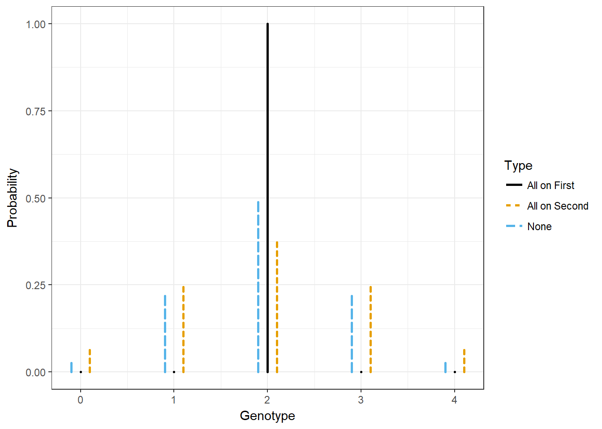

We developed a model for preferential pairing. How different does this make the genotype distribution compared to the absence of preferential pairing?
We will assume we are in an S1 population tetraploids. In this case, the only parental genotype that results in a different inheritance distribution is 2. Let’s look at how extreme the difference can be.
library(updog)
library(tidyverse)
library(ggthemes)
ploidy <- 4
p1geno <- p2geno <- 2
blist <- get_bivalent_probs(ploidy = ploidy)
p1dist <- blist$probmat[blist$lvec == p1geno, , drop = FALSE]
p2dist <- blist$probmat[blist$lvec == p2geno, , drop = FALSE]These are the weights needed to get back non-preferential pairing:
get_hyper_weights(ploidy = ploidy, ell = p1geno)$weightvec## [1] 0.3333 0.6667Let’s put all of the weight on the first or second second term
weightvec <- c(0, 1)
p1segprob <- colSums(weightvec * p1dist)
p2segprob <- colSums(weightvec * p2dist)
gene_dist1 <- c(0, 0, 1, 0, 0) ## all weight on first
gene_dist2 <- c(updog::convolve(x = p1segprob, y = p2segprob))
f1dist <- get_q_array(ploidy = ploidy)[p1geno + 1, p2geno + 1, ]data_frame(None = f1dist,
"All on First" = gene_dist1,
"All on Second" = gene_dist2,
geno = 0:4) %>%
gather(key = "Type", value = "Probability", 1:3) ->
smalldat
smalldat$geno[smalldat$Type == "None"] <-
smalldat$geno[smalldat$Type == "None"] - 0.1
smalldat$geno[smalldat$Type == "All on Second"] <-
smalldat$geno[smalldat$Type == "All on Second"] + 0.1
ggplot(data = smalldat,
mapping = aes(x = geno,
xend = geno,
y = 0,
yend = Probability,
lty = Type,
color = Type)) +
geom_segment(lineend = "round", lwd = 1) +
theme_bw() +
xlab("Genotype") +
ylab("Probability") +
ggthemes::scale_color_colorblind()
My convolution is way faster for this scale:
microbenchmark::microbenchmark(
stats::convolve(p1segprob, rev(p2segprob), type = "o"),
updog::convolve(x = p1segprob, y = p2segprob)
)## Unit: microseconds
## expr min lq mean
## stats::convolve(p1segprob, rev(p2segprob), type = "o") 31.74 33.15 40.98
## updog::convolve(x = p1segprob, y = p2segprob) 10.23 11.64 14.34
## median uq max neval
## 33.85 35.26 282.09 100
## 13.05 14.28 53.95 100This R Markdown site was created with workflowr